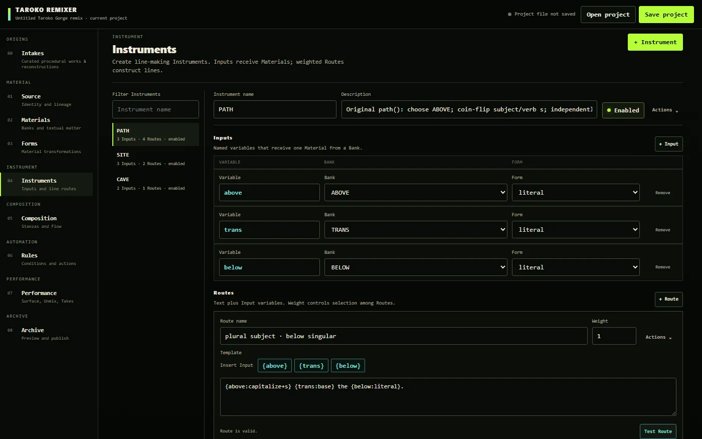
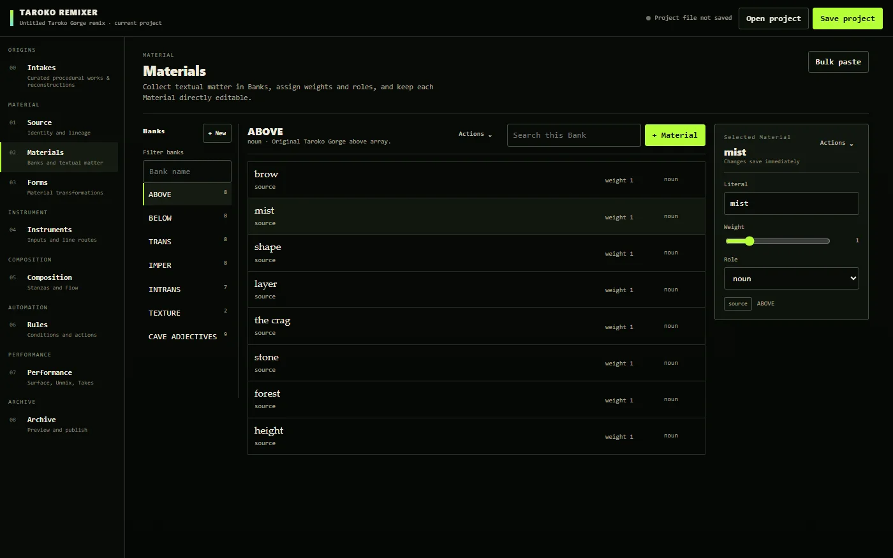
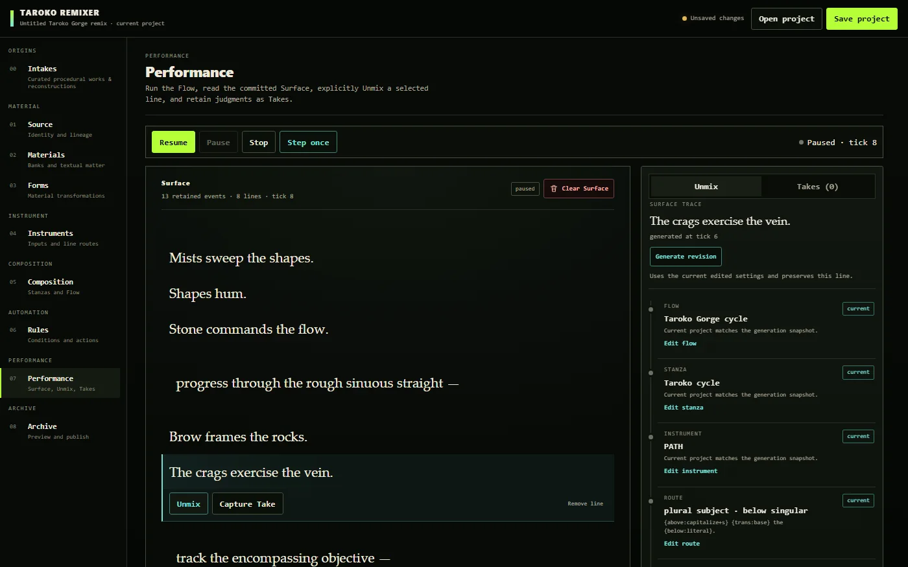

A no-code platform for procedural poems · by Mozare · 2026
TAROKO REMIXER
Nick Montfort's Taroko Gorge (2009) kept its word lists in plain view, and writers copied the page, changed the words, and published their own versions. TAROKO REMIXER carries that openness toward no-code creation: banks, routes, stanzas, and rules become modules wired together in the browser.

Primary surfaceRelease v1.0.4
Routes build lines from them.
Every line can be unmixed.
SELECTED VIEWS
Three views
Three images hold distinct reading conditions without reducing the work to a single representative screen.

01
Materials
Banks hold Materials with weights and roles. The Taroko Gorge baseline arrives as seven Banks and fifty Materials, each editable in place.
02
Instruments
Inputs receive Materials, and weighted Routes turn them into lines through templates such as {above} {trans} {below}.

03
Unmix
A line taken from the running Surface opens the Flow, Stanza, Instrument, Route, Materials, and Rules that produced it.
CONTEXT
A platform for remixes
At the Electronic Literature Organization's 2012 panel “Taroko Gorge Remixed,” Sonny Rae Tempest, speaking “from a non-academic place” and without knowing JavaScript, described using Montfort's poem “as a template”: the code was simple enough that friends could see the input and the output and “go and do this themselves.” That simplicity is one reason a remix lineage grew around Taroko Gorge.
TAROKO REMIXER follows that aspect toward no-code creation. The decisions a remixer once made inside the source file (which words, in which Banks, with what weights, through which line patterns, in what order, under which exceptions) become modules that are configured and wired in the browser. A person can design a working poem-machine, run it, and export it as a standalone HTML work without writing a line of code.
Every programming language is an interface over a more basic one, and no-code carries that track further toward access. Montfort and Bogost's platform studies (Racing the Beam, 2009, and the Platform Studies series) give a name to what the app becomes: a platform for an open-ended number of procedural e-poems, each of them a remix. Fifteen works from the Taroko Gorge lineage, Montfort's original among them, can be opened as editable baselines.
After Nick Montfort, Taroko Gorge (2009). The bundled baselines remain the work of their authors.
EDITION AND ACCESS
Work identity
A no-code platform for procedural poems
Mozare
Mohammad Zare
Release v1.0.4 · 2026-10-02
Interface in English; baselines in English and Polish
No-code workbench; remixes export as standalone HTML
Zare, Mohammad (Mozare). TAROKO REMIXER. Version 1.0.4, 2026. https://taroke-remixer.theblackbirdfield.com/